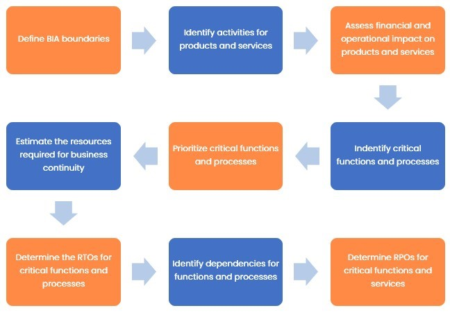
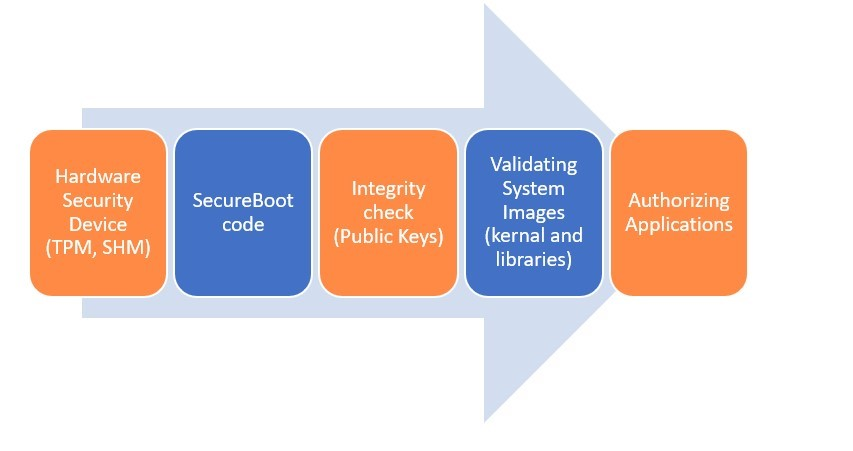
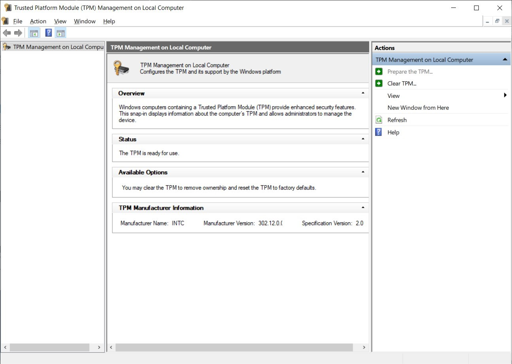

Introduction
9beca326-b493-4b0e-b3dc-d7dfb77df3c9
Welcome to the Applying Security Concepts to Mitigate Risk Practice Lab. In this module, you will be provided with the instructions and devices needed to develop your hands-on skills.
dc640c20-9434-45ea-b7c2-6d4d6a196bfc
Learning Outcomes
In this module, you will complete the following exercises:
- Exercise 1 - Business Impact Analysis (BIA)
- Exercise 2 - Software Assurances
- Exercise 3 - Hardware Assurances
After completing this module, you will have further knowledge of:
- Business Impact Analysis (BIA)
- Software Assurances
- Hardware Assurances
Exam Objectives
The following exam objectives are covered in this lab:
- 2.2 Explain software assurance best practices
- 2.2 Explain hardware assurance best practices
- 5.2 Given a scenario, apply security concepts in support of organizational risk mitigation
Note: Our main
focus is to cover the practical, hands-on aspects of the exam
objectives. We recommend referring to course material or a search engine
to research theoretical topics in more detail.
Lab Duration
It will take approximately 1 hour to complete this lab.
89816a20-56f2-42c5-bfa0-46f11f2986ba
Help and Support
For more information on using Practice Labs, please see our Help and Support page. You can also raise a technical support ticket from this page.
Click Next to view the Lab topology used in this module.
d2c53300-f951-45a9-9aa4-3d4ecae69e11
Lab Topology
This lab contains supporting materials for CySA+.

Click Next to proceed to the first exercise.
<
Home |
README >
CompTIA Cybersecurity Analyst (CySA+) Practice Labs
Exercise 1 - Business Impact Analysis (BIA)
A Business Impact Analysis (BIA) is a process that
helps to identify critical business functions that are running within an
organization. Along with identifying these functions, it also helps to
determine the impact if any function goes down. Using the BIA process,
you can minimize the potential loss due to an unexpected event. By
developing the BIA, you can devise recovery strategies and implement
them to limit the possible loss.
When you complete the BIA process within your
organization, you can determine the risks that may occur in a disaster.
You can implement the BIA process in a manger that each department
within the organization is involved and determines the impact of
specific risks. After the departments have decided on the risks, you can
calculate the effect of these risks. You can then prioritize the
functions that need more attention and protection. Going ahead, you can
calculate the Recovery Point Objective (RPO) and Recovery Time Objective
(RTO) to prioritize the functions.
RPO defines the tolerance level for an organization to
which they can revert to an older version of data. It is the maximum
amount of data you can afford to lose in case of a disaster.
RTO is the time during which the disrupted service or
server must be restored. It should be the maximum time to restore
service to its operations.
Both the RTO and RPO must be defined in the BIA process.
Learning Outcomes
After completing this exercise, you will have further knowledge of:
- Business Impact Analysis (BIA)
Your Devices
This exercise contains supporting materials for CySA+.

Business Impact Analysis (BIA)
Business Impact Analysis or BIA is a critical task
that needs to be performed as part of the Business Continuity and
Recovery Planning process. You need to perform BIA if you want to
discover the essential business processes that are highly critical for
running the business. If any of these business processes are
unavailable, then the function related to the business process may
become non-functional.
Let’s see how BIA fits into the Business Continuity
and Recovery Planning process, which has multiple steps that must be
performed to complete the process:
- Risk Assessment
- Business Impact Analysis (BIA)
- Business Continuity Plan Development
- Strategy and Plan Development
- Plan Testing & Maintenance
In the given series of steps that need to be performed
as part of the Business Continuity and Recovery Planning process, BIA
occurs in the initial phases. In the BIA phase, you list down the
recovery assumptions, which include the RTO and RPOs. You also list the
critical business functions and processes and their interdependence. For
example, a process may be dependent on an internal or external entity. A
software development team has outsourced the entire application
development to a third-party vendor. Now, there is a dependence on the
external entity. If, due to some unforeseen circumstance, the
third-party vendor is no longer available, then it is a huge risk for
the software development team as it will not be able to complete the
project.
When performing the BIA task, you need to assess the
financial and non-financial cost-based functions within the
organization. However, even though the organizations may have several
functions, some functions will always be more critical than the other
functions. Depending upon their criticality, you will have to give these
functions more priority when creating the BIA.
It is important to note that BIA must be done in
advance. BIA is not something that you perform when a disaster strikes.
You need to be ready with the identification of key processes and the
impact they can cause due to their unavailability. It is important to
remember that BIA is not a solution to any risk or disaster, but a tool
that helps an organization’s management focus on critical business
functions. When you perform BIA, you get the following information:
- Critical functions
- Critical systems and services
- Dependencies that may exist within functions or systems
- RTO and RPO
- Scenarios that can negatively impact the functions of systems and the loss that can be caused by them
BIA Considerations
The BIA considers various scenarios. For example, it would consider the following:
- Natural disasters: Flood, hurricane, earthquake
- Accidental disasters: Fire, power outage
- Human-made errors: data deletion
- System errors: system failure, hard drive failure
- Intentional errors: system hacks, data thefts
The above-given scenarios are not an exhaustive list,
but enough to highlight that the risks can occur in multiple scenarios.
It is important to highlight that the risks are not always technical and
relate to several other things, such as intentional errors and so on.
When you define the scenarios, you can use BIA to calculate the impact.
The BIA attempts to identify the impact of these scenarios.
Let’s take an example. Your organization has an online
e-commerce Web application for selling products. It has a database in
the backend that collects the payment through online transfers or credit
or debit cards. A hacker can exploit a vulnerability in this Web
application and gain access to the customer data. What is likely to be
the impact of this attack?
The organization may have to incur the cost in
millions of dollars to fix the vulnerability, repair the reputational
damage, or even responding to the lawsuits. Also, there will be costly
in terms of losing the business because customers are now afraid to
share personal data with your organization. You may end up paying money
as a resolution to the lawsuits.
If you had a BIA process in place, it would have been
easy for the organization to identify the critical business processes.
In this entire scenario, the system hosting the Web application is
critical, along with the Web application itself. Running the Web
application itself was a process in itself along with the sub-processes,
such as how to configure the server or how to configure the Web
application.
The BIA identifies mission-essential functions and
critical systems that are essential to the organization’s success. It
also identifies maximum downtime limits for these systems and
components, various scenarios that can impact these systems and
components, and the potential losses from an incident.
It is important to note that BIA is not designed
specifically for a particular scenario. For example, you will not design
the BIA to only work in a data breach scenario. It is not important
what disrupted a Web application. The more important factor is
identifying the critical processes, such as the Web application, and
ensure that it continues to run no matter what type of disaster takes
place.
Responsibility
In most cases, it is the responsibility of the
Business Continuity Manager (BCM) to perform the BIA task. The Business
Continuity Manager is the person who takes care of the business
continuity tasks and, therefore, is considered to be the best person to
handle the BIA task.
However, there may be a situation when there is no
business continuity team in an organization. In that situation, this
task may be outsourced to an external entity, such as a well-qualified
vendor. When you are outsourcing the BIA task to an external vendor, you
need to ensure that the vendor has extensive experience in handling
such tasks.
Participants in BIA
In most cases, BIA can be performed at different levels within an organization. You can perform the BIA task with:
- Only critical departments and their functions
- Most of the departments and their functions
- All departments and their functions within the organization
After you have decided on the departments and
functions, you need to start the BIA task by asking the questions. The
questions can be divided into two parts:
- Monetary impact: can include loss of revenue, cost of lawsuits and penalties, and increase operating costs, loss of sales, and increased income
- Non-monetary impact: can include loss of reputation, customer service, and operations, customer dissatisfaction
You can spend a few hours with each of the departments
and ask them to complete these questions. On average, you should be
spending 3-4 hours with each department. The answers can be put on a
scale of 1 to 5.
Regulations and Standards
There are specific regulations and standards available
the cover the financial and non-financial impact of the disruptions or
disaster that may occur. These regulations and standards also cover the
identification of resources and if they have any kinds of dependencies.
Some of the key regulations and standards are:
- International Organization for Standardization (ISO) 22301
- National Fire Protection Act 1600
- Federal Financial Institutions Examination Council’s (FFIEC) BCP standard
Challenges
When performing the BIA task, there is a high
probability that you are likely to face several challenges. These
challenges can be:
- Lack of involvement: This is one of the
biggest challenges in the BIA task. The employees within the
organization do not dedicate time to this particular task. One of the
key reasons is that the employees do not see a value in this particular
task.
- Correct selection of representatives: When
conducting the BIA task, you need to ensure that you spend time with the
correct representatives. If you meet representatives, who do not have
adequate knowledge about their business function, you will have
incomplete answers for the BIA task.
BIA Process
The BIA processes focus on two types of impact:
- Financial: focuses on the monetary losses, which can be the loss of sales and revenue.
- Operational: focuses on the loss of customers, poor customer services, and loss of reputation
To minimize the impact on financial and operational
aspects, you need to develop the BIA process, which includes the
following steps:
- Define BIA boundaries
- Identify activities for products and services
- Assess financial and operational impact on products and services
- Identify critical functions and process
- Prioritize critical functions and processes
- Estimate the resources required for business continuity
- Determine the RTOs for critical functions and process
- Identify dependencies for functions and processes
- Determine RPOs for critical functions and services
Figure 1.1: Diagram showing the BIA Process steps.
dc2a295a-ab17-4b52-8e1c-80389d10a470
Keep all devices that you have powered on in their current state and proceed to the review section.
<
Home |
README >
CompTIA Cybersecurity Analyst (CySA+) Practice Labs
Exercise 2 - Software Assurances
Software can be equipped with different types of
errors, which are known as defects. Some of the common types of defects
that can exist within the software are:
- Functional
- Compilation
- Run time
- Logical errors
- Inappropriate error handling
- Calculation
It is important to note that in the software
development lifecycle, the testing occurs quite late. Therefore, if any
of the defects are present in the software, they can either be caught
late in the lifecycle, or there can be a possibility that the defects
slip through the testing process.
Software assurance is the process in which you can
ensure that the software functions as it is supposed to and is free from
any kind of defects. Software assurance is more focused on developing
software that is free from any kind of vulnerabilities and defects that
are security-related.
The software assurance process is built into the
software development lifecycle, which integrates the methods of
preventing, responding, mitigating, and remediating the defects
throughout the lifecycle. For example, in the given exhibit, you can
integrate a security-focused code review along with the code review. In
the initial phases of the project, you can integrate secure and hardened
environments.
Learning Outcomes
After completing this exercise, you will have further knowledge of:
Your Devices
This exercise contains supporting materials for CySA+.

Software can be equipped with different types of
errors, which are known as defects. Some of the common types of defects
that can exist within software are:
- Functional
- Compilation
- Run time
- Logical errors
- Inappropriate error handling
- Calculation
It is important to note that in the software
development lifecycle, the testing occurs quite late. Therefore, if any
of the defects are present in the software, they can either be caught
late in the lifecycle, or there can be a possibility that the defects
slip through the testing process.
Software assurance is the process in which you can
ensure that the software functions as it is supposed to and is free from
any kind of defects. Software assurance is more focused on developing
software that is free from any kind of vulnerabilities and defects that
are security-related.
The software assurance process is built into the
software development lifecycle, which integrates the methods of
preventing, responding, mitigating, and remediating the defects
throughout the lifecycle. For example, in the given exhibit, you can
integrate a security-focused code review along with the code review. In
the initial phases of the project, you can integrate secure and hardened
environments.
Web Application Assurance
The majority of the users on the Internet connect to
one or other Web applications, which are used for various purposes, such
as online banking, shopping, car rental, and so on. However, it is
important to ponder what happens when Web applications are not secure.
Web applications can be hacked. Such hacking incidents take place
because there are bugs or defects within the Web applications. The
hackers tend to find such errors and exploit them for their gains.
When an attack on a Web application takes place, it
either loses the data or stops functioning. The outcome of the Web
application depends on the type of hack that has been conducted. For
example, a hacker may simply walk away with the data without causing any
functionality issues. On the other hand, a hacker may simply gain
control of the entire application and its administrative privileges.
Software Assurance Risks
When developing software, different types of risks
must be thought through. The risks can be categorized into three
different categories:
Design Errors
It is often said that no software can be bug-free,
and it is true because, intentionally or unintentionally, the software
developers will leave defects within the software. These defects are
later then exploited by malicious entities, such as hackers. The attack
on the software can be in the form of malware, vulnerability
exploitation, or even through zero-day vulnerability discoveries and
exploitation.
One method to prevent design errors is to use the best practices for secure software development and using the tools.
Ever Changing Technological Environment
The technological landscape is changing daily. With
the use of new technology, there is always a risk of introducing new
errors because the software developers are not skilled enough to handle
these errors. The hackers, on the other hand, are one step ahead in not
only their technology awareness but also in developing innovative
methods to find bugs and defects with the developed software.
Malicious Insiders
More than the security or any other kind of defects,
finding malicious insiders is a more difficult task. During the
development process, you need to safeguard the code being developed. It
must be thoroughly tested to ensure that it is not developed with a
backdoor or any other security loophole. Best practices should be
applied when hiring developers. The organization must ensure a thorough
and strict background check.
Software Assurance Tools
As part of the software assurance process, you would
need to perform several tests on the software being developed. There are
several software assurance tools that you can use to ensure a secure
software product. Some of the key software assurance tools that you can
use are:
- FindBugs: Used for static analysis of Java code
- Peach: Is a fuzzing tool that can generate artificial input into a developed software
- SonarQube: Is an open-source tool for performing a static code analysis with several pre-defined rules
- Yet Another Source Code Analyzer (YASCA): Is
an open-source tool that can test software for vulnerabilities and code
quality. It can also be used for performance testing and adherence to
best practices.
Software Assurance Maturity Model
The Software Assurance Maturity Model (SAMM) is an
opensource framework that can be tailed by the organization to manage
risks. Some of the key components of SAMM are:
- Evaluate the software security practices within an organization
- Build a software security program
- Demonstrate improvements to an existing security assurance program
- Define and measure security-related activities that exist in an organization
SAMM can be applied and implemented with an
organization of any size. It can also be applied to the entire
organization or even a single project.
SAMM Architecture
SAMM defines four critical functions that span
throughout the entire software development lifecycle. Each function has
three security practices that must be followed.
Mobile Software Assurance
Just like a typical application or software, software
assurance is also critical when you are developing a mobile app. When
performing software assurance with the mobile app, you need to ensure
the following:
- Set up appropriate process
- Standardize the quality process to prevent errors
- Educate the users on the standardized process
- Focus on preventing the errors rather than fixing them
- Focus on fixing the errors during the development process
When developing a mobile app, you need to ensure that
software assurance is enforced right from the beginning. It should not
be enforced in the pre-release or post-release stage, which will detect
bugs in the developed mobile app. You need to ensure that the software
assurance processes are applied even if the app development is being
done by the most experienced professionals in your organization.
Quality Issues in Mobile Apps
Just like a normal application or software, mobile
apps can also have various types of bugs or issues. Some of the
broad-level issues are categorized as follows:
Functionality
The functionality issues related to the functions that do not work as required. Some of the examples can be:
- App installation
- Login
- A specific feature not working
- Unnecessary errors generation
Usability
Be it a software or a mobile app; usability is one of
the biggest factors in its success. You would often find that a simple
application has a cluttered or confusing interface. If this happens with
your app, you can be assured that the users are likely to delete your
app. You must ensure that the app interface has been designed and
approved by a usability expert who has accounted for the best practices
within the app.
Performance
There can be performance issues related to the
functioning of the app. This could be related to the deteriorated
performance of the app, which means that the app is unable to work with
certain mobile devices because of resource issues. Another issue can be
due to concurrent users using the app, which in the backend, connects to
a server. A high number of concurrent users affect the server
performance, and therefore, the app itself is affected.
Security
Security issues are one of the prime concerns with
the mobile app. The confidentiality, integrity, and privacy of data
becomes a concern when a strong encryption method is not used. Poor
authentication and authorization methods also cause concerns.
Another key issue related to security is the storage
of data on the mobile device. Many app developers do not apply
encryption to the stored data, which means that the data can be read
without any specific tool. Along with the storage, the developers often
do not use appropriately designed Web services to interact with the
backend server, which may lead to the interception of data.
Basic Principles of Software Assurance
A few basic principles of software assurance are:
- Focus on preventing errors rather than fixing them
- Should be built into the app development process, which is every stage of the development
- Should focus on training the users, setting quality standards, and using the appropriate tools
- Should use the Fit for purpose and right first time
The app development process can further have better
quality results by using the Continuous Integration method, which
requires the developers to check-in the code into a shared repository.
The code check-in can be done various times a day. As and when the code
is checked-in, an automated test can be run to detect defects. With this
method, the defects are easily detected quite early in the development
process rather than waiting for the testing or pre-release phase.
Software Assurance Best Practices
When developing a mobile app, you should apply the
software assurance best practices. Some of the key mobile app software
assurance best practices are:
Use Multiple Types of Tests
A mobile app’s quality cannot be assured with one or
two types of tests. Rather, a series of tests must be executed to ensure
that all aspects of quality, such as functionality, performance, and
security, is assured.
You can execute some of the key tests, such as:
- Load
- Functional
- Accessibility
- Security
- Performance
- Graphical User Interface (GUI)
- Integration
- System
Test With Different Devices
It is quite obvious that the app will run across
various devices with different hardware and operating systems, such as
iOS and Android. Before launching an app with users, you should ensure
that the app has been tested with a variety of hardware and operating
systems. For example, you may test with various versions of Android and
iOS.
Arranging for a variety of devices with different
operating systems can be a major bottleneck. To resolve this issue, you
can use emulators, which can be used for testing purposes.
Watch for Resource Utilization
Before you launch the app with the end-users, you
must test the app for resource utilization. You can check for memory and
CPU utilization. Along with this, you must also test for battery usage.
Your app should not be draining the battery of a mobile device.
Perform Stress Level Tests
You should test the app under stressed out
conditions, specifically when the CPU and memory utilization is high.
You should test how the app behaves, and its performance metrics should
be captured.
Feed Sample Data
During the beta phase, you should feed in the sample
data and notice the results. You should attempt searching, adding,
modifying, and deleting the data. In this practice, you are likely to
discover that there are issues in data handling.
Software Assessment Methods
Load testing is performed to determine a system's
behavior under both normal and anticipated peak load conditions. It
helps to identify the maximum operating capacity of an application as
well as any bottlenecks and determine which element is causing
degradation.
Vulnerability assessment helps you locate the vulnerabilities in an application.
User Acceptance Test is a beta test, which typically
involves the real application users. Fuzz testing helps you discover the
security loopholes and coding errors.
The regression testing ensures that if the code has
been modified or something has been added or removed from the
application, there are no side effects.
A regression test tests the code after it has been
changed. Its intent to trace the defects that may have occurred due to
code changes. In peer review, two developers review each other’s code.
dc2a295a-ab17-4b52-8e1c-80389d10a470
<
Home |
README >
CompTIA Cybersecurity Analyst (CySA+) Practice Labs
Exercise 3 - Hardware Assurances
A hardware root of trust serves as the foundation to secure operations of a system. It serves two key functions:
- store encryption keys that are used in the cryptographic functions
- enable a secure boot process
The root of trust is implemented in the hardware and,
therefore, cannot be tampered with. In a normal scenario, a system is
prone to malware and other types of attacks, and if the encryption keys
are stored in the system, they can be easily stolen. However, the root
of trust is immune to a malware attack.
The root of trust can be implemented in two different ways. It can be either:
- a stand-alone security module
- security module that can be embedded within a processor or system on chip (SoC)
There are two types of hardware root of trust:
- Fixed function: designed to perform a
specific function, such as data encryption. Other functions it can
perform is key management and certificate validation. However, other
than the defined functions, it cannot perform any other functions.
- Programmable: is designed to perform complex tasks and functions. It is possible to upgrade a programmable root of trust.
A root of trust can be applied using:
- A private cryptographic key
- Physically Unclonable Function (PUF)
With the root of trust enforced, the booting process
of a system is considered to be genuine, with any applications running
on it.
In this exercise, you will learn about the Hardware Security Module and the Trusted Platform Module.
Learning Outcomes
After completing this exercise, you will have further knowledge of:
Your Devices
This exercise contains supporting materials for CySA+.

Hardware Security Module (HSM)
A hardware security module (HSM) is a
security device that is used for safeguarding and managing digital keys,
which are used for strong authentication. HSM can be in the form of a
plug-in card or an external device.
Following are the functions of an HSM:
- Performing encryption and decryption
- Manage secure key generation
- Perform secure key storage
- Manage Transparent Data Encryption (TDE) keys for databases
The following cryptographic algorithms are supported with microSD HSM:
- AES
- RSA
- SHA-1
- Triple DES
- Diffie-Hellman Key Exchange
Other than these cryptographic algorithms, SHA-256 is also supported by HSM.
Let’s take the example of a Webserver that you have.
The Web server is configured to run a Website with a certificate. You
notice that after the certificate configuration, the Web server has
slowed down. You want the Web server to give good performance while
using the certificate, and at the same time, you also want to protect
its private key.
HSM can meet both the requirements mentioned in the
scenario. HSM increases the performance of the Web server by offloading
the cryptographic functions. Moreover, HSM stores the private key. There
are different varieties available, such as USB and PCIe cards.
HSM Functions
HSM can perform various functions, such as:
- encryption keys management
- key exchange
- encryption and decryption
- cryptographic functions offloading from servers
HSM can be embedded in different types of hardware. Some of the key examples are:
- FIPS 140-3 compliant rack-mount chassis
- PCI-E cards
- USB drives
- MicroSD cards
Types of HSM
There are typically three types of HSM:
- Hardware: are available in the form of a device, such as PCI-E cards or MicroSD cards
- Virtual: is known as the virtual key manager,
which can be downloaded from a software vendor’s Website. They can be
FIPS 140-2 compliant, but not validated as there is no physical hardware
involved.
- Hosted: are available in the cloud
environment. They perform the same functions to generate and protect
keys. It provides the same level of security in the cloud environment as
a hardware HSM in the local environment.
Trusted Platform Module (TPM)
Motherboards of the modern systems include a chip
that is known as a Trusted Platform Module (TPM), which provides a
hardware root of trust for secure computing. When a system has TPM, you
can configure it by accessing BIOS within the system. A TPM can perform
various functions, such as:
- Storage of encryption keys
- Management of encryption keys
- Perform encryption and decryption process
- Storage of certificates
- Storage of passwords
You can configure TPM to perform full disk encryption
(FDE). However, for TPM to perform FDE, you need to ensure TPM, after
which it becomes the root of trust. Once it becomes the root of trust,
the hard drive is locked with the encryption keys, which means that it
cannot be simply taken out and plugged into another system for data
retrieval. When you enable TPM in a system, it performs a complete
system check and verifies the systems’ integrity. Further, it ensures
the integrity of the entire boot process within a system.
The concept of the root of trust is formed by the use
of TPM, which ensures that the hardware cannot be either tampered with
or replicated. For example, someone cannot just copy a particular
motherboard to break the encryption applied through TPM.
It is important to note that TPM must be configured
without which it is of no use. You must configure and lock TPM to ensure
that its configuration, including the access policies, cannot be
altered. With the locking method, the configured security profiles
cannot be changed, leading to a high level of security for the system.
Figure
1.1 Diagram showing the Chain of Trust. It shows a Hardware Security
Device > SecureBoot Code > Integrity Check (Public Keys) >
Validating System Images (Kernal and Libraries > Authorizing
Applications.
Using the TPM, SecureBoot ensures only the trusted
operating system bootloaders can load in the system. For the Secureboot
to work, you need to have two components in the system:
Functioning of TPM
A TPM works in two different ways:
- Pre-boot: Secures the boot process to ensure its integrity by scanning the BIOS for any unauthorized changes
- Post-boot: Can be configured as the root of trust for authentication and enable encryption for data protection
TPM becomes handy when you are looking for
unbreakable security. This is because TPM is a hardware-based security
solution that cannot be altered or tampered with. In a comparison of
software-level security, TPM can provide protection from hackers and any
kind of malicious software, such as malware.
Typical Use Cases of TPM
If you are using the latest version of Windows, such as Windows 10, you would have used BitLocker to
encrypt the hard drive. BitLocker can work with TPM as well, and half
of the encryption key of BitLocker is stored in TPM, and the other half
is stored on the hard drive. When you boot the system, TPM runs a series
of tests to ensure secure boot up. However, with the BitLocker enabled,
if you move the hard drive to another system, then the hard drive is
locked. For the system to boot properly, it needs to have access to both
parts of the hard drive.
Verifying the TPM Chip
Microsoft provides a method to check if your system has a TPM chip on the motherboard. You need to simply run the tpm.msc tool on the Windows system, which could be running Windows 7, 8, 8,1, or 10.
When you run the tpm.msc tool, you get the following console:
Figure 3.2 Screenshot of the TPM Management window dashboard.
There can be a possibility that your system has the
TPM chip, but it is disabled in BIOS. In that case, the TPM chip will
not appear in Windows. To enable the TPM chip, you need to get into the
BIOS, for which the process may differ from system to system. Once you
get into the BIOS (or UEFI), you can enable the TPM chip.
TPM vs. HSM
There can be confusion about the functioning of TPM
and HSM. However, both of them have quite a few differences. Here are
some of the key differences:
- Hardware: A TPM chip is embedded on a motherboard in most cases. HSM, on the other hand, is typically removable or are external devices.
- Uses: A TPM is used for full disk encryption,
such as used with BitLocker for full disk encryption. On the other
hand, HSM is used primarily for mission-critical servers, which could be
SSL accelerators or certificate authorities.
- Authentication: A TPM is used for platform authentication. On the other hand, HSM is mainly used for authentication of authorized applications.
- Encryption Keys: A TPM stores the RSA key
within its chip. It can also generate other keys. On the other hand, HSM
also stores the RSA keys, but to be used in asymmetric encryption.
Similar to a TPM, it can generate encryption keys.
dc2a295a-ab17-4b52-8e1c-80389d10a470
86b3caf2-2504-4e20-a81b-2fcb2368c8d2
Review
Well done, you have completed the Applying Security Concepts to Mitigate Risk Practice Lab.
2abaca70-efa1-4fe5-94fb-ad1777bfc242
953165e5-6e46-4fff-ae9a-c8e03a512dec
2854fb08-75ad-4c29-b70f-48190b849efa
09f5dc98-e0d4-47fa-b0b8-64fc2548a8df
7de5c1b5-924e-44db-8a7f-f13cab0c84a6
0d1ceee8-fafb-4fee-8c10-68086bf3bbb4
aaaaaaaa-1111-1111-1111-193f35a24fe3
Summary
You completed the following exercises:
- Exercise 1 - Business Impact Analysis (BIA)
- Exercise 2 - Software Assurances
- Exercise 3 - Hardware Assurances
You should now have further knowledge of:
- Business Impact Analysis (BIA)
- Software Assurances
- Hardware Assurances
Feedback
067744a4-4299-4662-b5be-04dbb636a007
Shutdown all virtual machines used in this lab. Alternatively, you can log out of the lab platform.